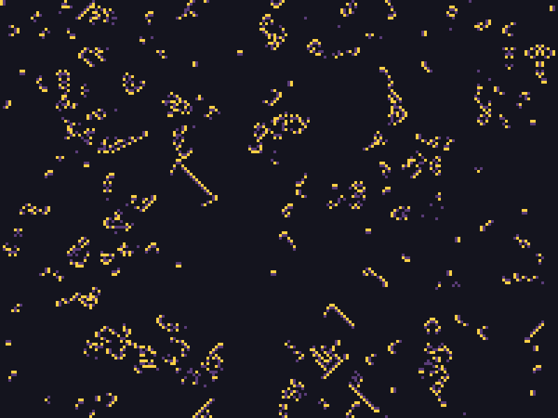
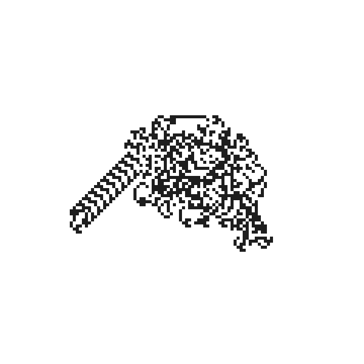
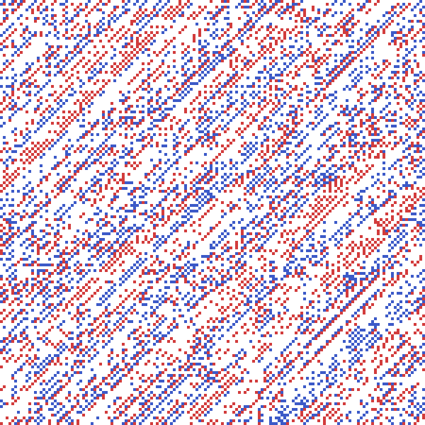
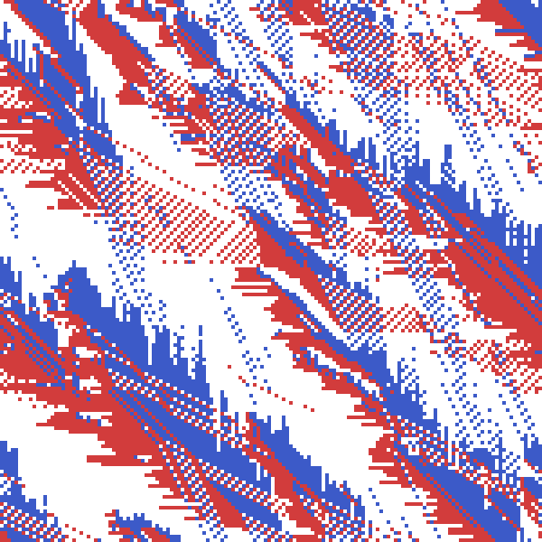

セルオートマトンと反応拡散系
1 次元セルオートマトン
セルオートマトン（Cellular Automaton）は、格子状に並んだ「セル」がそれぞれ有限個の状態を持ち、次の世代の状態が自身と近傍セルの現在の状態だけから決まる、というモデルである。個々のルールは単純でも、格子全体では複雑な模様が生まれる点で、L-system や IFS と同じ「単純な規則の反復から複雑さが生まれる」というフラクタルの精神を共有している。
Stephen Wolfram が分類した初等セルオートマトンは、1 次元に並んだ 0/1 の 2 状態セルを対象とし、次の世代のあるセルの状態は、自分自身と両隣（合計 3 セル、8 通りの組み合わせ）だけから決まる。8 通りの組み合わせそれぞれについて次の状態を 0/1 で指定すると、8 ビット、つまり 0-255 のルール番号で全ての規則を表現できる。
def elementary_ca(rule: int, width: int, steps: int) -> np.ndarray:
"""Wolframの初等セルオートマトンを width幅×steps世代分計算する。
各セルの次の状態は、自身と両隣の3セル(左・中央・右、8通りの
近傍パターン)から、``rule`` 番号(0-255)のビットで決まる。戻り値は
形状 ``(steps, width)`` のブール配列で、行が世代、列が空間位置を
表す。初期状態は中央の1セルだけを1にしたものを使う。
"""
rule_bits: np.ndarray = np.array(
[(rule >> i) & 1 for i in range(8)], dtype=np.uint8
)
grid: np.ndarray = np.zeros((steps, width), dtype=np.uint8)
grid[0, width // 2] = 1
for t in range(steps - 1):
left: np.ndarray = np.roll(grid[t], 1)
center: np.ndarray = grid[t]
right: np.ndarray = np.roll(grid[t], -1)
neighborhood: np.ndarray = (left << 2) | (center << 1) | right
grid[t + 1] = rule_bits[neighborhood]
return grid.astype(bool)
世代を 1 行ずつ積み重ねて画像にすると、ルール 30 は一見ランダムに見える模様を、ルール 90 はフラクタルの IFS で見たシェルピンスキーの三角形と全く同じ模様を作る（ルール 30 が生む模様は、実際に Mathematica の乱数生成器の 1 つとしても使われている）。ルール 90 は「両隣の XOR（排他的論理和）」という規則にすぎないが、それだけで自己相似な三角形が現れるのは興味深い。


2 次元セルオートマトン（ライフゲーム）
John Conway のライフゲーム（Game of Life）は、2 次元格子上のセルオートマトンで、周囲 8 マスの生死数だけから次の世代が決まる。
死んでいるセルは、周囲にちょうど 3 つ生きたセルがあれば誕生する。
生きているセルは、周囲に 2 つか 3 つ生きたセルがあれば生存し、それ以外（過疎・過密）では死滅する。
def life_step(grid: np.ndarray) -> np.ndarray:
"""Conwayのライフゲームを1世代分進める(周期境界)。
生存条件は「周囲8マスの生存数がちょうど3なら誕生」
「2または3なら生存を維持」で、それ以外は死滅する。周囲8方向への
ずらし・加算は固定回数のPythonループだが、その中身は格子全体への
NumPy演算なので、セル数が増えてもループ回数自体は変わらない。
"""
neighbor_count: np.ndarray = np.zeros(grid.shape, dtype=np.int64)
for dy in (-1, 0, 1):
for dx in (-1, 0, 1):
if dy == 0 and dx == 0:
continue
neighbor_count += np.roll(
np.roll(grid, dy, axis=0), dx, axis=1
)
born: np.ndarray = (neighbor_count == 3) & ~grid
survive: np.ndarray = (
(neighbor_count == 2) | (neighbor_count == 3)
) & grid
return born | survive
周囲 8 方向の生死を数える処理は、8 方向ぶんだけ np.roll でずらした格子を足し合わせるだけで実装できる。フラクタルのマンデルブロ集合と同じく、ループを回すのは固定回数（ここでは 8 方向）ぶんだけで、その中身は格子全体への NumPy 演算なので、格子が大きくなってもループの回数自体は変わらない。
本資料は静止画を中心とした資料であるため、ここでは各世代を薄れさせながら重ね合わせることで、動きの軌跡を 1 枚の静止画として捉える（同じ発想は、後のパーティクルシステムで扱うパーティクルの軌跡表現にも登場する）。世代の進行をそのままアニメーションとして書き出す方法は、時間変化の表現：静止画とアニメーションで扱う。
def render_life_trail(
history: np.ndarray,
color: tuple[int, int, int] = (40, 90, 60),
fade: float = 0.90,
) -> Image.Image:
"""各世代を指数的に減衰させながら重ね合わせ、セルが動き回った
軌跡を1枚の静止画として可視化する。
直近の世代ほど濃く、古い世代ほど薄く残るため、静止画のまま
「どこがよく動いていたか」という時間的な情報を表現できる。
"""
height: int
width: int
_, height, width = history.shape
accumulator: np.ndarray = np.zeros((height, width), dtype=float)
for state in history:
accumulator = accumulator * fade + state.astype(float)
max_value: float = float(accumulator.max())
normalized: np.ndarray = (
accumulator / max_value if max_value > 0 else accumulator
)
background: np.ndarray = np.full((height, width, 3), 255.0)
fg: np.ndarray = np.array(color, dtype=float)
pixels: np.ndarray = (
background + (fg - background) * normalized[..., np.newaxis]
)
return Image.fromarray(pixels.round().astype(np.uint8))
ランダムに撒いた初期状態から 150 世代進めた軌跡は、次のようになる。安定した図形（ブロックなど）や周期的に振動する図形はくっきりと残り、消えていった部分は淡い影として残る。

多様なセルオートマトン
ライフゲームは「周囲 8 マスの生死数」という近傍だけを見る規則の一例に過ぎず、状態の種類や近傍の解釈を変えるだけで、性質のまったく異なるセルオートマトンを数多く作れる。ここでは 3 つの代表例を見る。
Brian's Brain は、ライフゲームの 2 状態（死・生）を、死 (0)・発火 (1)・消えかけ (2) の 3 状態に増やしたセルオートマトンである。死んでいるセルは周囲 8 マスにちょうど 2 つ発火セルがあれば新たに発火するが、発火セルは近傍によらず必ず消えかけに移り、消えかけのセルは近傍によらず必ず死に戻る。ライフゲームの「生存」に相当する状態がなく、発火したセルは 1 世代後には必ず消えてしまうため、模様は決して静止せず走り続ける。
def brians_brain_step(grid: np.ndarray) -> np.ndarray:
"""Brian's Brainを1世代分進める(周期境界)。
各セルは 死(0)・発火(1)・消えかけ(2) の3状態を持つ。死んでいる
セルは、周囲8マスにちょうど2つ発火セルがあれば新たに発火する。
発火セルは近傍によらず必ず消えかけに移り、消えかけのセルは
近傍によらず必ず死に戻る。ライフゲームと違って「生存」という
状態がなく、発火したセルは1世代後には必ず消えるため、模様は
決して静止せず走り続ける。
"""
firing: np.ndarray = grid == 1
firing_neighbors: np.ndarray = np.zeros(grid.shape, dtype=np.int64)
for dy in (-1, 0, 1):
for dx in (-1, 0, 1):
if dy == 0 and dx == 0:
continue
shifted: np.ndarray = np.roll(
np.roll(firing, dy, axis=0), dx, axis=1
)
firing_neighbors += shifted
next_grid: np.ndarray = np.zeros_like(grid)
next_grid[(grid == 0) & (firing_neighbors == 2)] = 1
next_grid[grid == 1] = 2
return next_grid
ランダムな初期状態から 40 世代進めると、あちこちに小さな渦や、火花が尾を引くように移動する断片（グライダー）が同時多発的に生まれ、消えてはまた新しい発火が起こる、絶えず動き続ける模様になる。


ラングトンの蟻（Langton's ant）は、格子全体を一括更新するここまでの規則とは違い、盤面上を 1 匹の「蟻」が歩き回りながら盤面を書き換える。蟻は現在いるマスの色に応じて「白マスなら右に 90 度回頭し、マスを黒く塗ってから前進する」「黒マスなら左に 90 度回頭し、マスを白く塗ってから前進する」という規則にただ従うだけである。
def langtons_ant(grid_size: int, steps: int) -> np.ndarray:
"""ラングトンの蟻を steps 歩シミュレートし、最終的な盤面を返す。
盤面は 白(0)/黒(1) の2状態。蟻は現在いるマスの色に応じて
「白マスなら右に90度回頭し、マスを黒く塗ってから前進」
「黒マスなら左に90度回頭し、マスを白く塗ってから前進」を繰り返す。
各ステップの結果が直前の盤面と蟻の位置・向きの両方に依存する
逐次処理のため、ライフゲームのように盤面全体をNumPy演算だけで
一括更新することはできない。約1万歩を過ぎたあたりから、それまでの
無秩序な軌跡が一転して斜めに伸び続ける規則的な「ハイウェイ」模様に
落ち着くことが知られている。
"""
grid: np.ndarray = np.zeros((grid_size, grid_size), dtype=np.uint8)
y, x = grid_size // 2, grid_size // 2
# heading 0-3 が、上・右・下・左の順に90度ずつ回頭した向きに対応する。
directions: np.ndarray = np.array([(-1, 0), (0, 1), (1, 0), (0, -1)])
heading: int = 0
for _ in range(steps):
if grid[y, x] == 0:
heading = (heading + 1) % 4
grid[y, x] = 1
else:
heading = (heading - 1) % 4
grid[y, x] = 0
dy, dx = directions[heading]
y = (y + dy) % grid_size
x = (x + dx) % grid_size
return grid
各ステップの結果が直前の盤面と蟻の位置・向きの両方に依存する逐次処理のため、ライフゲームのように盤面全体を NumPy 演算だけで一括更新することはできない。最初の 1 万歩ほどは無秩序な模様が広がるだけだが、ある時点を境に、それまでの無秩序さが嘘のように、盤面の外側へ向かって斜めに伸び続ける規則的な「ハイウェイ」模様に落ち着く。単純な局所規則から、無秩序な過渡状態を経て秩序だった構造が現れるという意味で、反応拡散系のパターン形成とも通じるものがある。


BML 交通モデル（Biham-Middleton-Levine model）は、格子上の車の流れを模した 2 状態ならぬ 3 状態（空・右へ進む赤い車・下へ進む青い車）のセルオートマトンである。1 世代を「赤い車だけが動く半ステップ」と「青い車だけが動く半ステップ」の 2 段階に分け、それぞれの半ステップでは、進行方向のマスが空いている車だけが 1 マス前進する。
def bml_traffic_step(grid: np.ndarray, horizontal: bool) -> np.ndarray:
"""BML交通モデルを1半ステップ分進める(周期境界)。
盤面は 空(0)・右に進む赤い車(1)・下に進む青い車(2) の3状態。
``horizontal=True`` の半ステップでは赤い車だけが、``False`` の
半ステップでは青い車だけが、進行方向のマスが空いていれば1マス
前進する。同じ半ステップで動く車は全員が同じ方向へ1マスだけ
ずれるので行き先が重なることはなく、「1マス先が空いているか」を
``np.roll`` で判定するだけで全車を同時に動かせる。
"""
axis: int = 1 if horizontal else 0
color: int = 1 if horizontal else 2
ahead_is_empty: np.ndarray = np.roll(grid, -1, axis=axis) == 0
can_move: np.ndarray = (grid == color) & ahead_is_empty
next_grid: np.ndarray = grid.copy()
next_grid[can_move] = 0
next_grid[np.roll(can_move, 1, axis=axis)] = color
return next_grid
同じ半ステップで動く車はみな同じ方向へ 1 マスずれるだけなので、複数の車が同じ行き先を奪い合うことはなく、「1 マス先が空いているか」を np.roll で判定するだけで全車を同時に動かせる。車の密度を変えて同じステップ数だけ進めると、密度が低いうちは車どうしがほとんどぶつからずに流れ続ける一方、ある密度を境に、盤面のどこかで生じた渋滞が二度と解消されずに全体が完全に停止してしまう。この急激な変化はジャム相転移と呼ばれ、水が氷になるような物理的な相転移と同じ枠組みで研究されている。




反応拡散系
セルオートマトンが「離散的な状態を持つ格子」を扱うのに対し、反応拡散系（reaction-diffusion system）は「連続的な濃度を持つ格子」を扱う、いわば連続版のセルオートマトンである。2 種類の化学物質 U・V が格子上を拡散しながら反応する様子をシミュレートすると、条件次第でヒョウ柄・サンゴ状・迷路状といった、生物の模様によく似た模様が自己組織化的に現れる（Turing パターンとも呼ばれ、実際の生物の体表模様の形成理論としても知られる）。
Gray-Scott モデルは、次の反応拡散方程式で表される。U はどこでも一定の割合 feed で補充され、V は feed + kill の割合で常に取り除かれる。U と V が同じ場所にあると、V が U を消費して自分を複製する（u v^2 の反応項）。
離散化した格子上では、ラプラシアン \(\nabla^2\) は上下左右の隣接セルとの差の合計（5 点ステンシル）として計算できる。
def laplacian(field: np.ndarray) -> np.ndarray:
"""5点ステンシルによる離散ラプラシアン(周期境界)。
上下左右の隣接セルとの差の合計であり、値がまわりより低い場所
ほど正、高い場所ほど負になる、拡散の向きと強さを表す量になる。
"""
return (
np.roll(field, 1, axis=0)
+ np.roll(field, -1, axis=0)
+ np.roll(field, 1, axis=1)
+ np.roll(field, -1, axis=1)
- 4.0 * field
)
def gray_scott_step(
u: np.ndarray,
v: np.ndarray,
feed: float,
kill: float,
diffusion_u: float = 0.16,
diffusion_v: float = 0.08,
dt: float = 1.0,
) -> tuple[np.ndarray, np.ndarray]:
"""Gray-Scottモデルによる反応拡散を1ステップ分進める。
U はどこにでも一定の割合 ``feed`` で補充され続け、V は
``feed + kill`` の割合で取り除かれ続ける。U と V が同じ場所に
あるとVがUを消費して自分を複製する(``u * v**2`` の反応項)ため、
Vが少し存在する場所を種にして模様が広がっていく。
"""
reaction: np.ndarray = u * v * v
next_u: np.ndarray = (
u + (diffusion_u * laplacian(u) - reaction + feed * (1.0 - u)) * dt
)
next_v: np.ndarray = (
v + (diffusion_v * laplacian(v) + reaction - (feed + kill) * v) * dt
)
return next_u, next_v
feed と kill の組み合わせだけで、模様の種類ががらりと変わる。種を 1 箇所だけに置くと模様が完全に対称なまま成長が止まってしまうことがあるため、ランダムな位置に複数の種を撒いて対称性を崩している。
def simulate_gray_scott(
width: int,
height: int,
feed: float,
kill: float,
num_steps: int,
rng: np.random.Generator,
num_seeds: int = 12,
seed_radius: int = 6,
) -> np.ndarray:
"""一様なU場にVの種を複数箇所ランダムに撒き、num_steps ステップ反復する。
種を1箇所だけに置くと、模様が完全に対称なまま育ってしまい、
パラメータによっては単一の安定した塊で成長が止まってしまう
ことがある。ランダムな位置に複数の種を撒くことで対称性を崩し、
パラメータ本来の模様（迷路状・水玉状・ミミズ状など）が
キャンバス全体に広がりやすくなる。戻り値は最終ステップの V 場
（形状 ``(height, width)``）。
"""
u: np.ndarray = np.ones((height, width), dtype=float)
v: np.ndarray = np.zeros((height, width), dtype=float)
for _ in range(num_seeds):
cy: int = int(rng.integers(seed_radius, height - seed_radius))
cx: int = int(rng.integers(seed_radius, width - seed_radius))
y0: int = cy - seed_radius
y1: int = cy + seed_radius
x0: int = cx - seed_radius
x1: int = cx + seed_radius
v[y0:y1, x0:x1] = 1.0
u[y0:y1, x0:x1] = 0.5
v = np.clip(v + rng.uniform(-0.05, 0.05, size=v.shape), 0.0, 1.0)
for _ in range(num_steps):
u, v = gray_scott_step(u, v, feed, kill)
return v


セルオートマトンが 1 ステップごとに 0/1 が確定する離散的な更新なのに対し、反応拡散系は微小時間ごとに連続的に値が変化していく点が対照的である。しかし、どちらも「近傍だけを見る単純な更新規則を格子全体に適用し続ける」という共通の骨格を持ち、その繰り返しから複雑で有機的な模様が自己組織化してくるという性質は変わらない。
自己組織化によって縞状・波状の模様が現れる現象は、化学反応に限らない。飛砂（aeolian sand transport）、つまり風が地表の砂粒を巻き上げて運ぶ現象でも、風上側の斜面を転がり上がった砂粒が風下側の斜面から滑り落ちる（アバランチ）という局所的なやり取りだけから、風紋や砂丘といった周期的な模様が自己組織化的に生まれることが知られている。ただし、この現象を素直にモデル化するには、Gray-Scott モデルのように「その場に留まったまま濃度が拡散する」規則だけでは不十分で、砂粒が風下側へ実際に移動する（輸送される）過程や、斜面の傾きが急になりすぎると崩れるアバランチの規則を別途組み込む必要があり、反応拡散系よりも一段複雑なモデルになる。本資料では実装を割愛するが、「近傍だけを見る単純な規則の反復から、縞や波のような秩序だった模様が自己組織化的に現れる」という反応拡散系の本質は、化学反応にも砂粒の輸送にも共通して見られる普遍的な現象である。